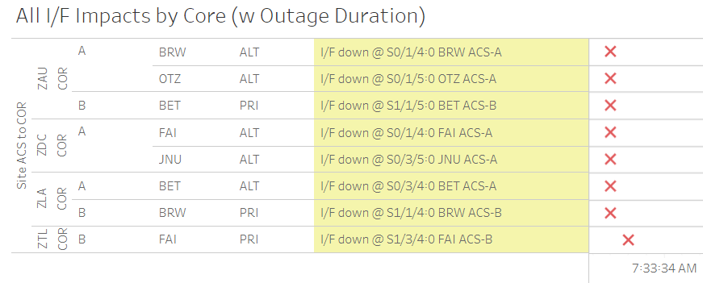

Weekly Highlights 20240424-20240501
SSM-WAAS-066 - CY24 Comm Upgrade
WAAS Engineering has released SSM-WAAS-066, and we are coordinating Cutover Start to begin the week of 4/8/2024. This SSM will accomplish the following:
- Remove the ZSE Comm Node from the WAAS Topology and upgrade Alaska WRS Comms
- Upgrade Ring 1 Mexico WRS-ZTL Comms (Ring 2 Mexico WRS-ZLA comms are not part of this modification)
- Upgrade O&Ms, C&Vs, and Core Routers to support comm changes

- 4/24 16:10 - SSM-WAAS-066 - ZSE WRS down for Upgrade to W7.403L; restored to Normal at 4/24 19:42
- 4/24 19:25 - SSM-WAAS-066 -
Upgrade ZLA COR-A to W7.402L; restored
at 4/24 19:31
- BET Ring 1 ALT to ZLA did not come up -- needs troubleshooting
- 4/24 21:40 - Reset ZLA COR-A Port 0/3/4 -- did not clear issue...
- 4/24 21:42 - Reset ZLA COR-A Entire Subsystem -- did not clear issue...
- 4/25 07:00 - GUS Switchover - G30 - AP1 to Primary / BR2 to Backup in preparation for POC O&M Upgrade
- 4/25 14:32 - SSM-WAAS-066 - POC O&M to Maintenance for Upgrade to W7.403L; Received Processor Failure SEs with RDSP process identified and failed to enter Maintenance Mode 3x -- issued a Reset Subsystem, removed RMD USB, and POC O&M came up to Maintenance at 4/25 15:06; verified to Normal at 4/25 15:35
- 4/25 15:06 - BR2 GUS locked up and Faulted when POC O&M returned to Maintenance Mode -- known issue; Control Powered and restored to Backup at 4/25 18:22
- 4/25 15:38 - SSM-WAAS-066 - NOC O&M to Maintenance for Upgrade to W7.403L; verified to Normal at 4/25 16:09
- 4/25 16:00 - BET Ring 1 ALT comms cleared thanks to troubleshooting onsite
- 4/25 16:13 - SSM-WAAS-066 - Upgrade ZTL COR-A to W7.402L; restored at 4/25 16:21
- 4/25 17:27 - BRW Ring 2 ALT shows Loopback at ZLA COR-B, but comm issue not cleared...
- 4/25 18:45 - ZLA COR-B Router was replaced to troubleshoot BRW Ring 2 ALT circuit issues; observed improvement in Line UP / Protocol DOWN (previously DOWN / DOWN -- indicating bad port at previously installed ZLA COR-B)
- 4/25 19:44 - ZLA COR-B Router Resync / Reset to clear SE 255 Comm Fault; BRW Ring 2 ALT circuit still Line UP / Protocol DOWN
- 4/29 15:18 - SSM-WAAS-066 - ZDC C&V Upgraded with W7.403L; restored to Normal at 4/29 17:10
- 4/30 19:13 - SSM-WAAS-066 - ZTL connected Ethernet cable for Mexico and I/F came up for all sites on Ring 1 -- disconnected at 4/30 21:07 until further testing can be performed
- 4/30 19:47 - SSM-WAAS-066 - MMX
Comm Upgrade Installed - W7.402L
- While onsite, we will troubleshoot other issues with DCP-A and PCUs B and C; will also troubleshoot Ring 2
- 4/30 20:15 - SSM-WAAS-066 - MMD
Comm Upgrade Installed - W7.402L
- While onsite, we will validate Ring 1 if possible and troubleshoot Ring 2
Alaska Comm Upgrade portion of SSM 66 complete
Several of the new circuits have ongoing issues (+ GCI Outage below):
- OTZ - Following circuits not delivered / SA'd
- Ring 1 PRI to ZAU - FTIH-WS-053504
- Ring 2 PRI to ZLA - FTIH-WS-053508
- Ring 2 ALT to ZLA - FTIH-WS-053509
- BRW - Ring 2 ALT to ZLA - FTIH-WS-053531
- Troubleshooting ongoing...
4/26 - ZOB Power Panel Work
- 4/26 02:51 - ZOB WRE-B Shutdown for
FENS Power Panel work; ref LAD 44152121; restored to Normal at 4/26 05:49
4/26 and 4/29 - HNL WRE-C Fault
- 4/26 03:57 - HNL WRE-C Faulted with SEs 53 and 59 -- the WRE had also experienced several instances of SE 306 CPU Threshhold exceed during the week and shortly before Faulting; ref LCM 787755224; restored to Normal at 4/26 04:54
- 4/29 08:23 - HNL WRE-C Faulted with SEs 53 and
597; Freq Std alarmed with
F3 - Ionizer Filamentat the same time (this also occurred with the previous fault); Control Powered and restored to Normal at 4/29 09:15
4/26 - ZLC WRE-B Won't Initialize
- 4/22 14:34 - ZLC WRE-B returns to Maintenance for PCU replacement and Freq Std install; Freq Std was unable to communicate after PCU replacement; shutdown at 4/23 00:02 to continue work the next day...
- 4/23 16:09 - ZLC WRE-B returned to Maintenance to continue troubleshooting the Freq Std / PCU -- confirmed the Freq Std output to the Receiver is as expected, but initialization is still failing -- further troubleshooting needed...
- 4/26 20:38 - ZLC WRE-B continued troubleshooting
--
Found frequency standard was set to 9600 Baud rate. Changed to 2400. This has corrected the issue.; ref LCM 778939524; restored to Normal 4/27 03:41- ZLC WRE-B - 4/10-4/27 - Freq Std failed; remove / replaced
4/27 - ZTL GPS Clock Alarm
- 4/27 05:02 - ZTL C&V GPS Clock alarmed with SE 203 GPS Clock HW Fault; ref LCM 788194624; Operators performed CV0029 -- Control Powered and Verified to Normal at 4/27 07:46
4/30 - MMX Restoration (DCP-A Replaced / PCU-C Reconfigured)
- 4/18 20:28 - MMX WRE-A Shutdown for power cycle, but Control Power not possible with spotty Ring 2...
- 4/23 15:15 - MMX WRE-A returned to Maintenance Mode after site technician cycled power on the PCU, but went offline 10 min later...
- 4/30 20:47 - MMX WRE-A returned to Maintenance
Mode after Processor replacement;
restored to Normal at 4/30
21:12
- MMX WRE-A - 4/18-4/30 - Shutdown by Operator and Control Power not possible...
- 5/1 15:44 - MMX WRE-C to Maintenance for PCU-C troubleshooting -- configuration fixed for LAN port and restored to Normal at 5/1 17:29
Various Comm Impacts
* Does not include single-line impacts <60 seconds which do not cause an outage
SZ1 Comm Events
- 4/24 22:06 - SZ1 GUS Ring 1 PRI / Ring 2 ALT comms flapping; last events cleared at 4/25 04:33 (~647 seconds total)
- 4/25 09:43 - SZ1 GUS Ring 1 ALT / Ring 2 PRI comms down hard; both lines cleared at 4/25 09:48 (~311 seconds)
- 4/25 17:28 - SZ1 Ring 1 PRI / Ring 2 ALT flapping -- some instances of SZ1 to No Data Reported during ZLA COR-B troubleshooting; last event cleared at 4/25 18:56 (~241 seconds total)
- 4/29 17:07 - SZ1 Ring 1 PRI / Ring 2 ALT comms flapping; last event cleared at 4/29 17:21 (~60 seconds total)
- 4/30 15:50 - SZ1 Ring 1 PRI / Ring 2 ALT comms flapping; last event cleared at 4/30 17:28 (~147 seconds total)
- 5/1 16:06 - SZ1 Ring 1 PRI / Ring 2 ALT comms down hard for loopback testing; line cleared at 5/1 16:14 (~459 seconds)
- 5/1 17:33 - SZ1 Ring 1 PRI / Ring 2 ALT comms flapping with loopback; last event cleared at 5/1 18:44 (~1213 seconds)
AP1 Comm Events
- 4/26 07:19 - AP1 Ring 1 PRI / Ring 2 ALT comms down for ~30 seconds
- 4/26 11:20 - AP1 Ring 1 PRI / Ring 2 ALT comms down for ~30 seconds
- 4/26 12:11 - AP1 Ring 1 PRI / Ring 2 ALT comms flapping; last event cleared at 4/26 12:24 (~237 seconds)
YFB / YYR Ring 1 Comm Events
- 4/29 19:21 - YFB / YYR Ring 1 comms down hard; both lines cleared at 4/29 19:23 (~110 seconds)
- 4/29 20:03 - YFB / YYR Ring 1 comms down hard; both lines cleared at 4/29 20:05 (~121 seconds)
- 4/29 20:33 - YFB / YYR Ring 1 comms down hard; both lines cleared at 4/29 20:37 (~257 seconds)
- 4/29 21:29 - YFB / YYR Ring 1 comms down hard; both lines cleared at 4/29 21:34 (~309 seconds)
Other Sites
- 4/24 20:00 - CDB Ring 2 down hard; line cleared at 4/24 20:18 (~1045 seconds)
- 4/24 21:58 - CDB Ring 2 flapping; last event cleared at 4/24 23:46 (~1155 seconds total)
- 4/25 03:57 - ZSU Ring 1 ALT / Ring 2 PRI and CM1 Ring 1 ALT / Ring 2 PRI took comm hits; ZSU lines down for ~45 seconds; CM1 lines down for ~100 seconds
- 4/25 04:23 - ZSU Ring 1 ALT / Ring 2 PRI comms took ~30 second hits
- 4/30 04:16 - NOC-ZDC Ring 1 PRI / Ring 2 ALT down
hard for
MR-185755; ref LAD 779157724;**lines cleared at 4/30 04:47 (~1874 seconds)**
- 3/17 21:17 - YYR Ring 2 comms down hard; ref LIR 765571924; Ongoing...
- 4/8 17:01 - YYR Ring 2 comms looped; loop cleared at 4/8 17:11 (~596 seconds) -- but line still down...
- 4/10 02:00 - YYR Ring 2 comms looped...
- 4/24 18:23 - Loopback testing for YYR Ring 2 comms; line cleared at 4/24 19:45 (~3.277 million seconds; down since 3/17)
Alaska GCI Outage
- 4/26 07:33 - GCI Telco Outage in Alaska affecting comms for multiple WRS site -- OTZ taking full site outage; BRW down to one line...

Mexico Ring 1 Down to MTP / MSD
- 3/20 17:52 - MTP Ring 1 comms inserted loopbacks...
- 4/25 15:38 - MSD Ring 1 comms down hard...
List of current offline WREs
List of current offline WREs -- ref WAAS Status Monitor
- ZLC WRE-B - 4/10-... - Freq Std failed; PCU replaced; troubleshooting Receiver...
All Depot shipments to Mexico are halted until the customs process can be finalized
- MMX WRE-A - 4/18-... - Shutdown by Operator and Control Power not possible...
- MTP WRE-B - 7/21-... - PCU-B failing over and over again; input power tested good; disconnected power for other LRUs in WRE-B until PCU-B can be replaced; PCU-B has apparently been stable since 7/25 00:16 (no further power cycles on PCU)
5/11/23-... - MX Ring 2 Satcom Upgrade
MX WAAS Sites comm upgrades in progress:
- 2/15 - MMX Ring 2 successfully connected through Tijuana to ZLA COR-B!
- 11/2 - FTI has initiated coordination with Tijuana to install and test direct connection to Frequentis -- MMD Test on 12/6
- 10/27 - Frequentis has delivered to Tijuana, needs to be connected to FTI delivery
Further work / new cables needed at each WRS site to complete Ring 2 connection upgrades
FTI-Harris coordinating with SENEAM at TJX to complete end-to-end testing

Major Events


Comm Events